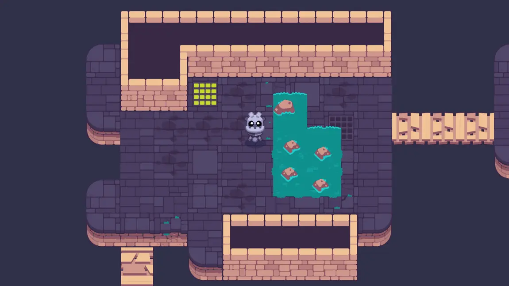

L2 Character Controller
M4 강의인 To Space and Beyond 에서는 8방향으로 움직일 수 있고 영역을 감지할 수 있는 우주선을 만들었습니다. 하지만 이 우주선은 어떤 것에도 부딪힐 필요가 없었지요. 이렇게 작동하는 게임은 거의 없습니다!
게임에는 장애물, 부딪힐 수 있는 요소들, 그리고 움직임을 제한할 벽이 필요합니다. 그렇지 않으면 레벨 디자인 자체가 불가능해집니다!
이번 강의에서는 CharacterBody2D 노드를 사용하여 캐릭터를 위한 탑다운 방식의 컨트롤러를 직접 코딩해보시게 됩니다. 우리 캐릭터는 M4에서 만든 우주선처럼 움직이지만, 몇 강의 뒤에 벽과 장애물을 추가하게 되면 그 차이가 분명히 드러날 것입니다.
이번 강의에서는 다음과 같은 내용을 배우시게 됩니다:
-
탑다운 방식의 캐릭터 컨트롤러 만들기
-
캐릭터를 여러 방향으로 움직이기
-
CharacterBody2D 노드가 무엇이며, 이를 어떻게 사용하는지 학습하기
우선, 충돌(collision) 에 대해 이야기해보겠습니다.
P1 What the computer sees
게임에서 캐릭터를 움직일 때는 보통 두 개의 평행한 객체가 함께 움직입니다. 하나는 플레이어가 보게 되는 시각적 레이어, 다른 하나는 컴퓨터가 플레이어가 이동할 수 있는지 없는지를 판단하는 물리 레이어입니다. 예를 들어, 플레이어가 보는 화면이 다음과 같다고 가정해봅시다:

컴퓨터가 보는 화면은 다음과 같을 수 있습니다:

물리 레이어는 일반적으로 원이나 사각형과 같은 기하학적 도형들로 구성되어 있어, 컴퓨터가 Collisions을 효율적으로 감지할 수 있게 해줍니다.
충돌이란 두 개의 기하학적 도형이 겹쳐졌을 때 발생합니다. 이 경우, 물리 엔진은 도형들이 더 이상 겹치지 않도록 서로 밀어내는 처리를 합니다. 이 연산은 렌더링 전에 한 프레임 안에 처리되므로, 플레이어는 이를 시각적으로 인식하지 못합니다. 예를 들어, 플레이어가 벽에 부딪히면 캐릭터가 벽에서 멈춘 것처럼 보이게 됩니다.
개발자인 우리는, 게임의 물리 레이어와 시각적 레이어가 잘 맞아떨어지는 듯한 착각을 줄 수 있는 도형들 을 찾아내는 역할을 하게 됩니다.
컴퓨터는 왜 충돌을 감지할 때 기하학적 도형을 사용할까요?
컴퓨터가 충돌을 감지할 때 기하학적 도형을 사용하는 이유는 성능 때문 입니다.
가장 간단한 도형인 원(circle) 을 예로 들어보겠습니다. 두 원이 겹쳐지는지를 알아내기 위해서는 각 원의 중심 좌표와 반지름만 알면 됩니다.
두 중심 사이의 거리가 반지름의 합보다 작다면, 두 원은 겹친 것입니다.
 이것은 컴퓨터가 매우 빠르게 계산할 수 있는 간단한 공식입니다.
이것은 컴퓨터가 매우 빠르게 계산할 수 있는 간단한 공식입니다.
그런데 만약 충돌 감지를 위해 스프라이트 자체 를 사용한다고 상상해보세요. 스프라이트는 수만 개에서 수십만 개의 픽셀로 이루어져 있을 수 있습니다. 두 객체가 충돌했는지 알아내려면, 한 스프라이트의 외곽에 있는 거의 모든 픽셀을 다른 객체의 픽셀과 비교해야 합니다. 이는 엄청난 양의 연산이 필요합니다! 반면 기하학적 도형을 사용하는 방식은 훨씬 빠릅니다.
또 다른 이유는, 단순한 기하학적 도형이 더 부드러운 상호작용을 만들어내기 때문 입니다. 예를 들어, 원 형태는 벽이나 경사면을 따라 자연스럽게 미끄러지듯 움직일 수 있지만, 픽셀 단위의 완벽한 충돌 감지는 각이 많은 구조로 인해 객체가 떨리거나 끼어 있는 것처럼 보일 수 있습니다.
좋습니다. 그러니까 게임 엔진은 객체들이 겹쳤는지를 감지하고 충돌을 처리하기 위해 물리 도형(physics shapes) 을 사용합니다. 그렇다면 Godot에서는 이러한 충돌을 어떻게 설정할 수 있을까요? 플레이어가 조작하는 캐릭터의 경우, CharacterBody2D 노드를 사용할 수 있습니다.